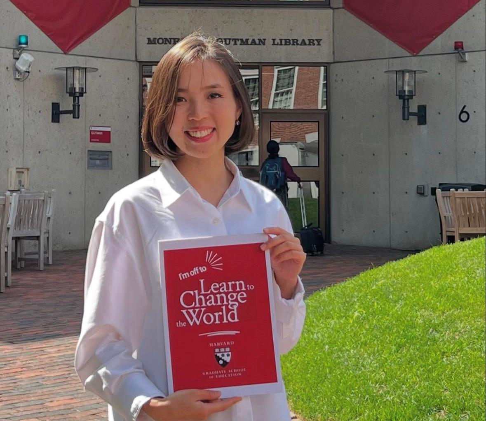
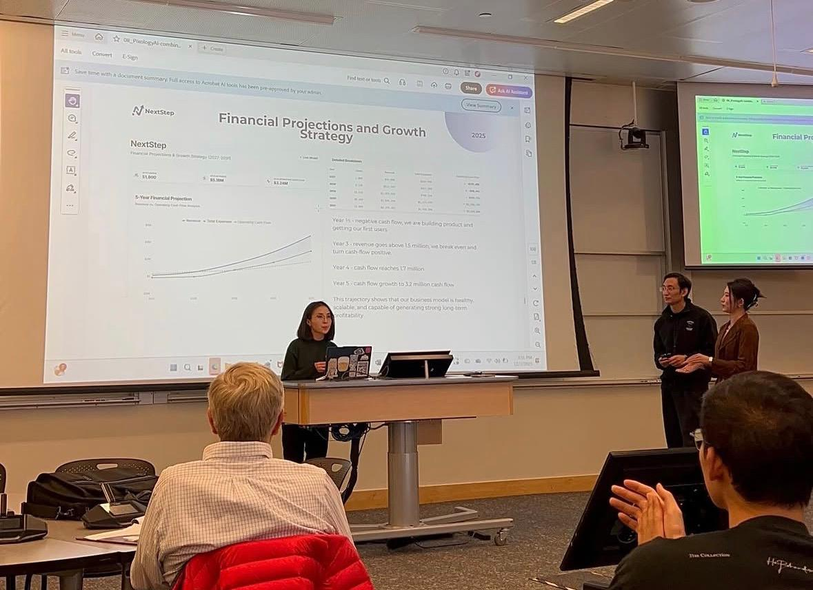

From a small village to Harvard
My name is Zhyldyz, and I come from the Issyk-Kul region of Kyrgyzstan. I was born in a small village.
When I studied at school, I never imagined that one day I would study at Harvard University. Today, I want to share my experience and my daily routine,
because success is - discipline and time management.
When I was preparing to study abroad, I learned one important rule: I had to plan everything
in advance. I created a clear schedule for study, exams and rest. Everyday, I tried to be responsible for my time. If I have an appointment with professors, I
always arrive on time, sometimes even early.
Now, at Harvard, my routine is structured. I usually set an alarm for 6:30 a.m. Exactly at 9:00 a.m. my
classes beging. Each lecture has a strict deadline and even a small delay can make me stress.
Before studying in the US I also had an experience
studying in Eourope. That period taught me for independence and self-discipline. In both Europe and the United States universities, expect students to manage
their time on their own. No one reminds you all the time - you must follow your routine and respect every minute.
Success depends on how you use your
time. When you respect time, time starts working for you. If you come from a small place, never think it limits you. With strong habits, clear goals, and
good time management, anything is possible. Just dream big!